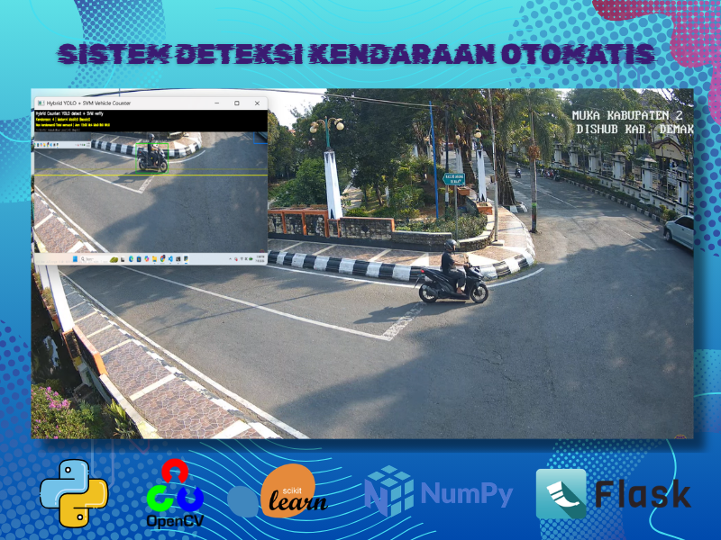

Deteksi & Penghitungan Kendaraan Real-Time Berbasis Fitur Gradien Spasial
Sistem ini memproses aliran video jalan raya 30 FPS untuk mendeteksi dan menghitung empat kategori kendaraan (Mobil Penumpang, Sepeda Motor, Bus, dan Truk). Ekstraksi fitur tepi dilakukan menggunakan jendela deteksi 64×128 piksel (sel 8×8 px, blok 16×16 px L2-Hys, 9 bin orientasi) yang dievaluasi oleh hyperplane SVM serta dilacak menggunakan jarak titik pusat Euclidean.
Python 3
OpenCV
scikit-learn
NumPy
Flask
HOG 3.780-D
SVM Classifier
Dimensi Vektor Fitur
3.780-D
Sel 8×8 px, Blok 16×16 px, 9 bin sudut
Kecepatan Inferensi
30,4 FPS
Rata-rata waktu proses 32,8 ms/frame (CPU)
Akurasi Klasifikasi
96,4%
Rata-rata presisi pada 4 kategori kendaraan
Metode Pelacakan
Centroid L2
NMS (IoU 0,35) & garis hitung virtual
TAHAPAN ALGORITMA PEMROSESAN CITRA HOG & SVM
Akuisisi Video 30 FPS & Pembatasan Poligon ROI
Membaca aliran video jalan raya 30 FPS menggunakan OpenCV dan menerapkan mask poligon Region of Interest (ROI) pada lajur jalan aktif untuk mengeliminasi derau latar pepohonan dan bangunan.
I_roi(x, y) = I(x, y) · M_poly(x, y)